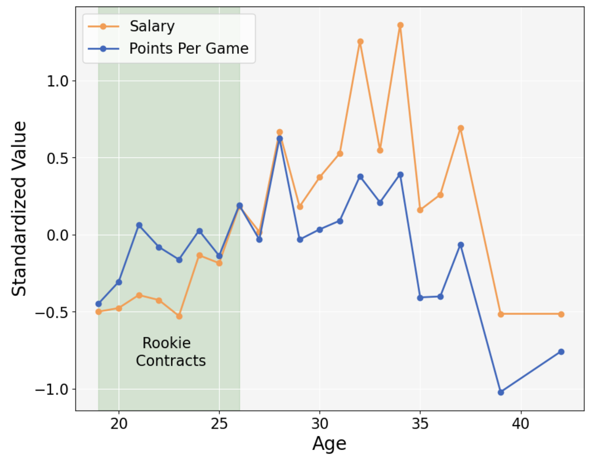
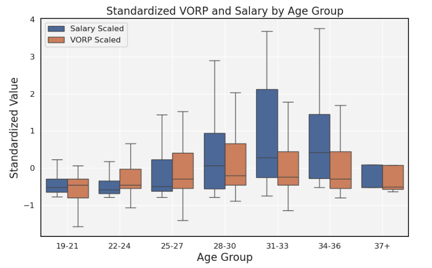

The scatterplot below shows every player's 2022-23 salary as well as how many points per game they averaged (PPG). Players in the green "undervalued" quadrant were above league average in PPG and below league average in salary, and vice versa for players in the red "overvalued" quadrant. Sizes are based on the individual's PPG.
Each point shows the player's name, salary, PPG, and age. Looking at the players in the under and overvalued category reveals a general trend of early 20s players outperforming relative to their contracts, whereas overrvalued players tend to be in their late 20s/early 30s.
The graph on the right compares the average standardized values for salary and PPG for every age in the NBA. It's clear that players ages 18-26 consistenly outperform their contracts with regard to PPG, while ages 27-28 are the closest to accurate valuations.
The NBA has guidelines that prevent rookie contracts from being anywhere near the league maximum. They also mandate that all of these contracts last 4 years. Even if a player is performing extremely well, they're not eligible for a league maximum contract until their rookie deal is up.
For teams with low cap space looking to win games, it may make sense to trade up in the draft and grab a top prospect relatively cheaply instead of trading for an aging superstar on a massive contract.

Do these findings hold true for VORP? How does position factor in?
Value over replacement player (VORP) is a metric that compares each player's contributions to a theoretical replacement player. As seen in the scatterplot below, there is a strong correlation between players with high VORP and playeres who command high salaries.
Breaking down salaries by position yields interesting results (as seen in the box plots on the right). Out of the top 200 highest-paid players, point guards earn the highest salaries with a median of $21.25 million, while centers earn a relatively meager $10.73 million per year. The top 3 highest paid players in the league were all point guards, with Stephen Curry earning the most at $48 million per year.
What patterns are there between VORP, salary, and age?
The figure on the right shows the distributions between standardly scaled salaries and VORP for each age bracket in the NBA. Similar to PPG, players in the early stages of their career tend to have a higher standardized VORP than salary.
While players aged 28-30 have the highest VORP on average, players aged 34-36 have the highest average salaries. This could be due to the fact that NBA contracts last for several years, so a player's current contract value is tied to their previous performance. As players decline with age and potentially encounter injuries, massive contracts that were awarded for great late-20s performance may no longer be such a good deal.
